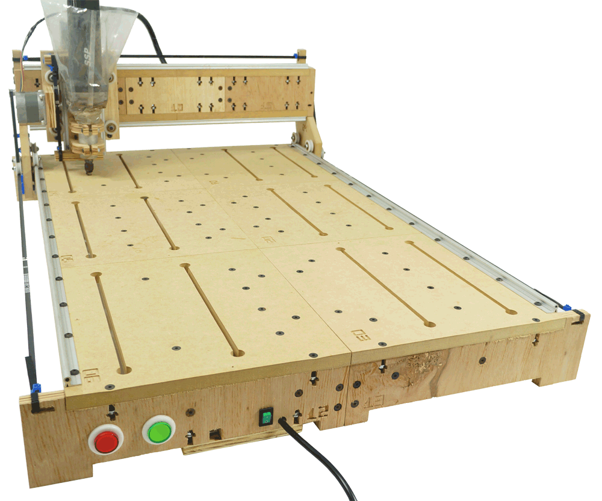

---
layout: base
---
|

|
-
a C37 desenvolveu
-
uma Router CNC
-
completa
-
para você.
|
Desenvolvidos para a Internet : Nossos tres softwares CAD, CAM e Controlador da Router CNC são elaborados para rodar em Navegadores de Internet. Isso significa que você pode acessá-los e utilizá-los em vários computadores e de qualquer lugar, ganhando mais tempo para seus projetos.
Soluções completa para você, seu primeiro negocio, ou sua industria Pessoal
O que era distante agora está ao seu alcance
O que era distante agora está ao seu alcance
Para você que está chegando agora neste envolvente mundo das CNCs ou para você que já acompanha a evolução destas máquinas-ferramentas,
a C37 oferece diferenciais que lhe deixará surpreso.
Nossa Router CNC foi desenvolvida com o objetivo de tornar esta máquina-ferramenta em um equipamento doméstico de
fácil transporte, simples de montar, com um tamanho versátil e
uma área útil surpreendente. Para isso, nossa Router CNC foi composta em partes modulares, confeccionadas
em Compensado e MDF oferecendo leveza e robustez.
A característica pioneira é a conexão com a porta USB(compatível com usb 2.0),
proporcionando a você usuário a diversidade de conecta-lá em computadores portáteis (notebooks) ou computadores de mesa (desktops).
Porém, o ponto mais marcante deste segmento no mercado atual é a interação e disponibilidade gratuita dos softwares CAD, CAM e do Controlador da Router CNC.
O resultado é uma máquina tecnológica, precisa, economica, produtiva,
intuitiva e prática.
E ainda, com um valor que desperta interesse.
Conheça a lista de materiais que nossa Router CNC usina:
Metais não são suportados
Com você em todas as etapas
Num processo de criação da idéia até a obtenção do produto final, algumas etapas são essenciais para otimizar o trabalho.
E, quando falamos de trabalhos executados em nossa Router CNC, estamos falando de 3 etapas exclusivamente executadas em um
computador. São elas:
Olhando para realidade do mercado mundial, a C37 tem o orgulho de dizer que oferecemos a Router CNC mais tecnologica e completa
deste segmento.
Disponibilizamos gratuitamente os softwares CAD, CAM e
Controlador de sua Router CNC em interfaces amigáveis, intuitivas e simples.
Voce aprenderá a utiliza-los da forma mais eficiente, sem a necessidade de cursos especializados;
familiarizando-se rapidamente com os recursos essenciais disponibilizados para obter o processo completo de criação.
E a inovação não para por aqui. Além de você poder usufruir destas versões gratuitas, as novas tecnologias em que estes softwares foram desenvolvidos necessitam apenas da utilização do navegador
Google Chrome em qualquer sistema
operacional em computadores desktop ou notebook.
Isso significa que você não precisará de um computador com características específicas de sistema
operacional, processador, memória ou espaço em seu disco rigido, pois nossos softwares não ocupam a memória de seu
computador e ainda mais, podem ser usados off-line(desconectados da internet). especificações
Venha para o nosso mundo CNC.
Acesse:
Inovações tecnológicas
Permitir que os avanços tecnológicos andem lado a lado com a habilidade de produzir objetos demandados do mundo real agora
é realidade com a C37.
Confira as 3 inovações tecnológicas que tem o potencial de mudar a forma como você vai se relacionar com a nossa Router CNC:
-
 Conexão via porta USB(compatível com usb 2.0)
: Parece meio óbvio, mas neste segmento máquinas-ferramentas possuiam apenas conexão via porta paralela o que limitava seu uso a um específico computador. A nossa
Router CNC possui entrada USB e por isso permite você conecta-la em quaisquer notebooks ou desktops para o desenvolvimento e produção de seus projetos
Conexão via porta USB(compatível com usb 2.0)
: Parece meio óbvio, mas neste segmento máquinas-ferramentas possuiam apenas conexão via porta paralela o que limitava seu uso a um específico computador. A nossa
Router CNC possui entrada USB e por isso permite você conecta-la em quaisquer notebooks ou desktops para o desenvolvimento e produção de seus projetos
-
Abre arquivos do tipo
: Foto (*.jpeg, *.jpg, *.gif, *.png), Engenharia (*.dxf), Scalable Vector Graphics (*.svg) e Fontes de Letras (*.woff, *.otf, *.ttf). No que diz respeito aos softwares CAD, o padrão universal de intercambio
de dados é o .dxf (Drawing Exchange Format). Contudo, o nosso C37 - CAD permite você abrir os arquivos citados acima, e por isso você tem disponivel
uma gama maior de possibilidades na elaboração, criação e edição de seus projetos.
-
 Desenvolvidos para a Internet
: Nossos tres softwares CAD, CAM e Controlador da Router CNC são elaborados para rodar em Navegadores de Internet. Isso significa que você pode acessá-los e utilizá-los em vários
computadores e de qualquer lugar, ganhando mais tempo para seus projetos.
Desenvolvidos para a Internet
: Nossos tres softwares CAD, CAM e Controlador da Router CNC são elaborados para rodar em Navegadores de Internet. Isso significa que você pode acessá-los e utilizá-los em vários
computadores e de qualquer lugar, ganhando mais tempo para seus projetos.